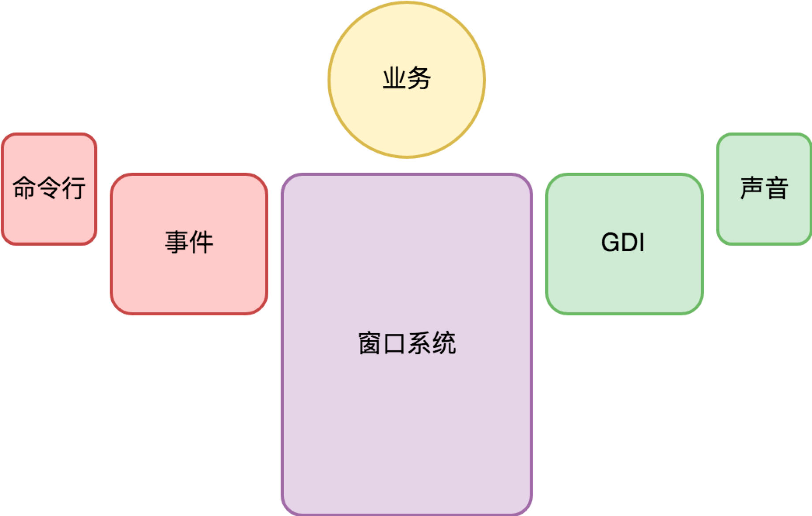

- 00 开篇词 怎样成长为优秀的软件架构师？.md.html
- 01 架构设计的宏观视角.md.html
- 02 大厦基石：无生有，有生万物.md.html
- 03 汇编：编程语言的诞生.md.html
- 04 编程语言的进化.md.html
- 05 思考题解读：如何实现可自我迭代的计算机？.md.html
- 06 操作系统进场.md.html
- 07 软件运行机制及内存管理.md.html
- 08 操作系统内核与编程接口.md.html
- 09 外存管理与文件系统.md.html
- 10 输入和输出设备：交互的演进.md.html
- 11 多任务：进程、线程与协程.md.html
- 12 进程内协同：同步、互斥与通讯.md.html
- 13 进程间的同步互斥、资源共享与通讯.md.html
- 14 IP 网络：连接世界的桥梁.md.html
- 15 可编程的互联网世界.md.html
- 16 安全管理：数字世界的守护.md.html
- 17 架构：需求分析 (上).md.html
- 18 架构：需求分析 (下) · 实战案例.md.html
- 19 基础平台篇：回顾与总结.md.html
- 20 桌面开发的宏观视角.md.html
- 21 图形界面程序的框架.md.html
- 22 桌面程序的架构建议.md.html
- 23 Web开发：浏览器、小程序与PWA.md.html
- 24 跨平台与 Web 开发的建议.md.html
- 25 桌面开发的未来.md.html
- 26 实战（一）：怎么设计一个“画图”程序？.md.html
- 27 实战（二）：怎么设计一个“画图”程序？.md.html
- 28 实战（三）：怎么设计一个“画图”程序？.md.html
- 29 实战（四）：怎么设计一个“画图”程序？.md.html
- 30 实战（五）：怎么设计一个“画图”程序？.md.html
- 31 辅助界面元素的架构设计.md.html
- 32 架构：系统的概要设计.md.html
- 33 桌面开发篇：回顾与总结.md.html
- 34 服务端开发的宏观视角.md.html
- 35 流量调度与负载均衡.md.html
- 36 业务状态与存储中间件.md.html
- 37 键值存储与数据库.md.html
- 38 文件系统与对象存储.md.html
- 39 存储与缓存.md.html
- 40 服务端的业务架构建议.md.html
- 41 实战（一）：“画图”程序后端实战.md.html
- 42 实战（二）：“画图”程序后端实战.md.html
- 43 实战（三）：“画图”程序后端实战.md.html
- 44 实战（四）：“画图”程序后端实战.md.html
- 45 架构：怎么做详细设计？.md.html
- 46 服务端开发篇：回顾与总结.md.html
- 47 服务治理的宏观视角.md.html
- 48 事务与工程：什么是工程师思维？.md.html
- 49 发布、升级与版本管理.md.html
- 50 日志、监控与报警.md.html
- 51 故障域与故障预案.md.html
- 52 故障排查与根因分析.md.html
- 53 过载保护与容量规划.md.html
- 54 业务的可支持性与持续运营.md.html
- 55 云计算、容器革命与服务端的未来.md.html
- 56 服务治理篇：回顾与总结.md.html
- 57 心性：架构师的修炼之道.md.html
- 58 如何判断架构设计的优劣？.md.html
- 59 少谈点框架，多谈点业务.md.html
- 60 架构分解：边界，不断重新审视边界.md.html
- 61 全局性功能的架构设计.md.html
- 62 重新认识开闭原则 (OCP).md.html
- 63 接口设计的准则.md.html
- 64 不断完善的架构范式.md.html
- 65 架构范式：文本处理.md.html
- 66 架构老化与重构.md.html
- 67 架构思维篇：回顾与总结.md.html
- 68 软件工程的宏观视角.md.html
- 69 团队的共识管理.md.html
- 70 怎么写设计文档？.md.html
- 71 如何阅读别人的代码？.md.html
- 72 发布单元与版本管理.md.html
- 73 软件质量管理：单元测试、持续构建与发布.md.html
- 74 开源、云服务与外包管理.md.html
- 75 软件版本迭代的规划.md.html
- 76 软件工程的未来.md.html
- 77 软件工程篇：回顾与总结.md.html
- 加餐 如何做HTTP服务的测试？.md.html
- 加餐 实战：“画图程序” 的整体架构.md.html
- 加餐 怎么保障发布的效率与质量？.md.html
- 热点观察 我看Facebook发币（上）：区块链、比特币与Libra币.md.html
- 热点观察 我看Facebook发币（下）：深入浅出理解 Libra 币.md.html
- 用户故事 站在更高的视角看架构.md.html
- 答疑解惑 想当架构师，我需要成为“全才”吗？.md.html
- 结束语 放下技术人的身段，用极限思维提升架构能力.md.html
- 课外阅读 从《孙子兵法》看底层的自然法则.md.html
- 捐赠
23 Web开发：浏览器、小程序与PWA
你好，我是七牛云许式伟。
前面几讲我们聊到桌面软件开发，是从原生应用（Native App）角度来讲的，我们的讨论范围还只是单机软件，没有涉及网络相关的部分。
虽然介绍 Model 层的时候，我拿基于数据库实现 Model 层来谈常见的两个误区，但这只是因为这种问题经常能够见到，比较典型。实际纯单机软件很少会基于数据库来做，通常是自己设计的内存中的数据结构。
浏览器
今天开始我们聊聊浏览器。从商业价值看，浏览器带来的最为重大的进步是如下这三点。
其一，软件服务化。 当产品交付从单机软件转向云服务后，社会分工就发生了巨大变化。
互联网让 “24 小时不间断服务”成为可能。任何一个环节的力量都得到百倍乃至千倍的放大，都有可能成长出一个超级节点，进而吞噬上下游，让服务链条更短。
其二，随时发布。 这极大改进了软件迭代的效率。人们快速试验自己的想法，不必过度因为顾虑软件质量召回而束手束脚。
其三，跨平台。 浏览器消除了不同操作系统平台的差异性，让一份代码到处运行成为可能。
不过我们今天把重心放到界面开发这个视角。** 从作为界面开发框架的角度看，浏览器带来的最重大变化又是哪些？**

其一，操作系统的窗口系统被颠覆。 一个网页只是一个窗口，不再有父子窗口。所有网页中的界面元素，都是一个虚拟视图（Virtual View），无论是大家耳熟能详的通用控件（比如 input，image，div 等等），还是自绘窗口（canvas）都一样。
这一点非常关键。哪些元素是子 View，哪些元素是图形（Shape） 已经完全淡化了，更多的是通过一种统一机制来完成事件分派（Event Dispatch）。
其二，窗口的绘制机制变了。 之前是调用操作系统的 GDI 生成界面，现在换成了 HTML+CSS。当然如果我们非要把 HTML+CSS 看作是另一种 GDI 语言，某种程度来看好像也可以。
但是实际上 GDI 与 HTML+CSS 有非常本质的差别。它们一个是在绘制界面，一个是在声明界面。这两者的本质差别，在视图更新（Update View）的时候一下子就显现出来。
上一讲我们在介绍 View 层的时候，介绍过 View 层的一大难点是做局部更新的优化。在 View 局部优化比较复杂的时候，我们甚至会引入 ViewModel 层来做视图局部更新的支持。
站在这个角度看 HTML+CSS，其实我们不能把它理解为 View 层，它其实是 ViewModel 层。View 层由谁干掉了？浏览器。在我们修改 HTML DOM 时，浏览器自动就更新了 View。怎么做到局部更新优化的？你不必关心，浏览器已经干完这件事情了。
这事的真正价值超过你的想象。它大幅提升了桌面应用开发的效率。
其三，语言限制。 浏览器的确大幅改善了界面开发的效率，但是从语言支持的角度，大部分操作系统都支持各种语言作为开发工具，而浏览器长期以来只支持 JavaScript 一门语言。
这当然是一个不小的制约。所以有很多人在试图突破这个限制。Google 曾经想要把 Dart 语言打造为下一代的 JavaScript，但最终以失败告终。
今天主流的方案还是以代码转换器为主。也就是说，我可以用自己期望的语言（比如 Go 语言）来做开发。但是在发布前通过代码转换器转为 JavaScript。
今天还有一个重要的尝试是 WebAssembly。它的目标是打通各类语言与 Web 之间的桥梁。
其四，B/S 架构。 无论是 B/S 还是 C/S，本质上还是软件服务化。这对软件架构产生了巨大影响。
一方面，从 Server 端的逻辑看，系统从单用户变成了多用户。另一方面，从 Browser 端（或 Client 端）看，仍然是单用户，但是没有了数据，数据都在 Server 端。这对应用架构提出了新的挑战。
应该怎么设计 Web 程序的架构？我们在下一讲中接着聊这个话题。
小程序
2016年9月，微信小程序（最初叫“应用号”）开始内测。下面是当天七牛云团队的一番内部对话。
许式伟：看下这篇，微信应用号来了。-
Gina：这个理念应该不是去构建一个Store，它的理念是用完即走，是场景通过扫码或者搜索触发的，并且应该打的是实体或者服务售卖群体，不会针对微信内消费，是订阅号的升级展现方式。-
许式伟：关于微信小程序（应用号），我能透露的几个细节，这一篇更详细一些。-
微信没有必要在微信App内放Appstore，可以只有Web版本的Appstore，App不需要安装，甚至可能以消息的方式发给别人，以服务号的形式存在，这是迭代式开发。-
以后终极形态还可以变，当前重心应该在runtime的稳定。通过上面的介绍，微信实际上升级了浏览器内核的标准，符合我之前说的新一代浏览器的定义。-
Gina：小程序是一种不需要下载安装即可使用的应用，它实现了应用“触手可及”的梦想，用户扫一扫或者搜一下即可打开应用。也体现了“用完即走”的理念，用户不用关心是否安装太多应用的问题。应用将无处不在，随时可用，但又无需安装卸载。-
徐倒立：WebApp 这个技术和 idea最早来自 Google 浏览器 ，微信是商业化的最佳实践。Google浏览器在支持开发者开发App时就提出Intents，并且和Android是可以互动的。-
Gina：没有好的土壤有好的功能也是没意义的。-
许式伟：是，微信小程序在别的App不是做不到，是做了意义太小。苹果和腾讯不约而同在IM里面做App是有道理的。-
Gina：IM比搜索和浏览器的封闭性更强。用户不容易跳转出去。封闭性强的土壤才能构建App生态。-
许式伟：所以移动时代最佳的浏览器是IM，不再是以前传统浏览器。-
杜江华：我们应该多讨论to B巨头们怎么玩、怎么思考的，对我们现阶段才更有意义，支付宝、微信等都是to C的。-
许式伟：不是这样的。to C 的生态变化，会影响 to B。to C 是根源，我们是帮用户做App的，如果不知道以后App是怎么玩的，怎么可能做好。-
杜江华：理解了，那应该是客户群之一互联网部分，还有不少大B 需要有其他不同的思考方式。-
Gina：大B的趋势我挺想听的。这周聚会，阿杜能否把最近大项目和大传统客户的一些动作详细聊一下。你这边离业务最近。-
许式伟：其实比你想象得还要恐怖，不管你是什么大B，你都得拥抱微信，只有微信和QQ让整个7亿中国网民在里面安家了，这就是一个虚拟的国家。所以我的判断是没有大B不开发微信小程序，这只是个眼光和时间问题。-
吕桂华：这个微信应用号我们是应该关注的，相当于市场上多了一个操作系统。-
许式伟：微信应用号不只是一个新OS，而且是下一代OS，苹果和谷歌不会坐视不理。当然还有一个痛点是跨平台。-
Gina：这个东西可能对营销生态有大的影响。我们也要开发些营销工具。
在这段对话之后的一个月内，我们做出了七牛的第一笔对外投资：“即速应用”，它致力于帮助企业开始快速构建自己的小程序。
为什么微信小程序必然会成功？
因为，有 7 亿人同时使用的操作系统，很少。如果我们把不同 Android 厂商归为不同的主体的话，微信小程序是当时世界上最大的单一来源的操作系统。
随后，支付宝发布了支付宝小程序，国内手机厂商联合发布了 “快应用”，今日头条也发布了自己的小程序。
一下子，小程序变成了一支巨大的新兴力量，成为真正意义上的国产操作系统，对抗着 Android 和 iOS 两大移动操作系统生态。
但是，目前来说，小程序生态仍然存在有诸多问题。
最为关键的，是标准不统一。虽然都叫小程序，但是它们的接口各自都在快速迭代，很难去建立统一的标准，更谈不上让开发者一次开发，到处可用。
这和 Android 不同。虽然 Android 厂商很多，但是不同 Android 的开发接口是一致的，开发工具链是一致的。
小程序的厂商们会好好坐下来谈一谈标准一致的事情吗？应该做，但可能他们现在没空管开发者们的体验，他们的关注点是怎么快速抢地盘。
聊了那么多，我们话题回到技术本身。小程序和传统的 Web 开发有何不同？
其实有很大不同。小程序更像是 Native 程序在线化，而不是 PC Web 移动化。
为什么我们这么说？因为小程序是一个应用，而不是由一个个 Web 页面构成。
我们需要提交应用给微信或支付宝，他们也会像苹果审核 AppStore 上的应用一样，掌控着 App 的生杀大权。
而且理论上可以比苹果更牛的是，他们可以下线一个已经有千万甚至上亿级别用户的 App，让他们一无所有。苹果可以掐掉一个 App 的新增，他们可以掐掉一个 App 的全部。
这会带来新的社会问题：操作系统厂商的权限边界究竟在哪里。这不是一个简单的技术问题，而是一个伦理与法律的问题。
正因为这个风险如此之高，所以所有的厂商在拥抱微信的同时，必然时时刻刻想着如何逃离微信。
刀刃，永远是两面的。
这也是我个人非常佩服Facebook扎克伯格的地方。他看到了终局，所以在发布 Libra 的时候，他选择的是让一步，放弃 Control。
我还是那句话，他会成功。
让一步，其实就是进一百步。
PWA
国内大厂们纷纷布局小程序的时候，Google 也在发力自己的移动浏览器方案，叫 PWA，全称 “Progressive Web App”。
其实 Google 想要让浏览器获得 Native 应用同等体验之心是路人皆知的事实。
在 PC 时期，Google 就搞了 Google Native Client (NaCl)，后来转向了 WebAssembly。移动应用的在线化，Google 也同样在探索。
PWA 开始于 2015 年，比微信小程序早很多，并得到了苹果和微软的支持。从这个角度来说，PWA 的潜力不容小觑。
怎么理解 PWA？你可以理解为海外版的小程序。
那么它和小程序的差别在哪？
其一，演进思路不同。PWA 基本上以兼容并对 Web 进行逐步改造升级为导向。而小程序和 Web 还是有较大程度的差异。
其二，关注焦点不同。PWA 更技术化，它很大的精力重心放在如何让 PWA 在断网情况下和本地应用有更一致的体验。而小程序关注点在如何撬动这么庞大的用户市场，小程序之后专门出现小游戏，更加能够证明这一点。
其三，PWA 并没有中心化的 AppStore，它更像是一项技术标准，而不是一个封闭的操作系统。支持 PWA 的厂商们不用担心被人掐脖子，怎么更新你的应用自己说了算。
虽然技术上相似，但是如果以操作系统角度看，两者有代差。PWA 如果我们看作操作系统的话，相比小程序来说太传统。
为什么这么讲？因为小程序符合我前面介绍现代操作系统的 “账号(Account)-支付(Pay)-应用市场(AppStore)” 的商业闭环，但是 PWA 并没有账号，也没有支付。
怎么看待 PWA 的未来？
最终把 PWA 发扬光大的，很可能是 Facebook（当然 Facebook 也非常大概率选择放弃包袱，和小程序一样重新出发）。加上 Libra，秒杀微信小程序。
结语
今天我们聊了浏览器，结合浏览器的发展趋势，谈了现在仍然在高速迭代中的移动浏览器之争。有中国特色的小程序，和海外版小程序 PWA。
如果你对今天的内容有什么思考与解读，欢迎给我留言，我们一起讨论。下一讲我们将聊聊 “跨平台与 Web 开发的建议”。
如果你觉得有所收获，也欢迎把文章分享给你的朋友。感谢你的收听，我们下期再见。
© 2019 - 2023 Liangliang Lee. Powered by gin and hexo-theme-book.